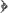

IslamAgainstExtremism.Com
Posted by Admin on Friday, May, 24 2013 and filed under News
Key topics: Woolwich • Michael Adebolajo • Omar Bakri • Anjem Choudary • Hizb Ut-Tahrir • Al-Muhajiroun
Michael Adebolajo, one of the suspects in the Woolwich killing was indoctrinated upon the ideas of Omar Bakri Mohammad and Hizb ut-Tahrir (also known as al-Muhajiroun, a splinter group), Abu Qatada (see here), Abu Hamza and others. He is also seen in pictures behind Anjem Choudary during protests. Salafi Muslims have been the most vocal of the Muslims in general in their battles against these extremists for close to two decades and their written and verbal rebuttals of these deluded extremists who have been misguided by the devil are well known, distributed and readily available. You may refer to this PDF article comprising a warning to the Muslims of Cardiff from the followers of Omar Bakri who have a habit of using different group names for their extremist activities and attempts to indoctrinate Muslims. The Independent ran an article on 24th May 2013 which indicates links between Adebolajo and Omar Bakri, the opening excerpt of which is included below with relevant commentary.
Exclusive: Woolwich killings suspect Michael Adebolajo was inspired by cleric banned from UK after urging followers to behead enemies of Islam
One of the suspected killers who attempted to behead and disembowel a young soldier in the horrific Woolwich attack had listened to the preachings of a radical Muslim cleric [Omar Bakri Mohammed] banned from Britain over extremist activities, including alleged links to al-Qa'ida, The Independent has learnt.
Omar Bakri Mohammad is a follower of Taqi al-Din al-Nabahani (see Nabahani.Com) who is documented to have been involved with Ba'thist Communist movements in Palestine and Syria in the late 1940s (see this article). Al-Nabahani adopted the structures and modes of operation of Ba'thist Communist secretive parties he was involved with during that time in forming "Hizb al-Tahrir", a tightly-knit, elitist political party whose aim is to ferment revolution through ideological preaching to the masses. This is pure Marxism and Leninism and al-Nabahani was just one of numerous thinkers in the early 20th century who borrowed ideas and methodologies from Communists and Socialists, Sayyid Qutb being another figure in this regard. Qutb's book "Milestones" is pure Leninism clothed in an Islamic garb (see here for details). As a result, Hizb ut-Tahrir and al-Muhajiroun have a specific set of methods they use to rope in and indoctrinate Muslim youth, ways that mimic the ways of those Communists and Ba'thists and this is very clear when one studies how they operate as an elitist network within the UK and elsewhere, where private meetings are through invitation and recruitment only, and there is strict ideological indoctrination upon the books of Taqi al-Din al-Nabahani. They nurture their recruits upon an ideology that assumes all Muslim nations to be apostate states, against which an ideological and then a physical revolution is obligatory - this being the only way to restore the khilaafah as they claim. They started out and failed miserably in Muslim lands and many of them made their way into the West and began their operations here, where they appeared to naive, gullible, and uneducated Muslims as genuine scholars of Islam, when they were nothing but misguided, deviant heretics out to cause mischief and chaos, seeking authority and leadership for themselves, the Arabic tongue being of benefit to them in duping the non-Arabic speaking British Muslims into believing they are scholars. It is here that we see the stink of hypocrisy in that these morally bankrupt individuals are happy to acquire welfare, the benefit of general security and all the other aspects of infrastructure provided in these lands by the respective governments yet antagonize the millions of non-Muslims whose tax money they are living off in the first place. Alongside this, they work to corrupt the minds of the Muslims and jeopardize their safety and well-being through their vile extreme ideologies and activities which they ascribe to Islam out of great oppression.
Contrary to these devils, listen to the speech of a genuine, orthodox, Salafi Islamic scholar - just by way of example: The esteemed and late Shaikh Muhammad bin Salih al-'Uthaimeen of Saudi Arabia stated, during a tele-link (recorded) on the evening of Friday, 28th July 2000, to an audience of over a thousand people in the city of Birmingham, UK, (during a conference organized by Maktabah Salafiyyah):
Do not be fooled by those sayings of the foolish people, those who say "Those people are Non-Muslims, so their wealth is lawful for us (to misappropriate or take by way of murder and killing)." For by Allaah - this is a lie. A lie about Allaah's Religion, and a lie about Islamic societies.
So we may not say that it is lawful to be treacherous towards people whom we have an agreement with.
O my brothers. O youth. O Muslims. Be truthful in your buying and selling, and renting, and leasing, and in all mutual transactions. Because truthfulness is from the characteristics of the Believers, and Allaah - the Most High - has commanded truthfulness - in the saying of Allaah - the Most High -
O you who believe - fear and keep you duty to Allaah and be with the truthful 
And the Prophet encouraged truthfulness and said,
And he warned against falsehood, and said,
O my brother Muslims. O youth. Be true in your sayings with your brothers, and with those Non-Muslims whom you live along with - so that you will be inviters to the Religion of Islaam, by your actions and in reality. So how many people there are who first entered into Islaam because of the behaviour and manners of the Muslims, and their truthfulness, and their being true in their dealings.
This Islam explained in the statement of this Salafi Scholar is not the Islam of these misguided devils. Indeed these people are simply a branch of the first sect to appear in Islam known as the Kharijites (renegades) about whom the Prophet (peace and blessings be upon him) is authentically related to have said,"They exit Islam like the arrow leaves the bow", and also "They are the dogs of Hellfire", and also "If was to reach them [when they appear], I would slaughter them like the slaughtering of Aad" and also "They recite the Qur'an but it does not go beyond their throats." This sect and its ideology is well known to the contemporary Salafi scholars who have waged an incessant war against them since the 1980s after their secretive activities came to light following their migration from Egypt during the late 1960s and 1970s.